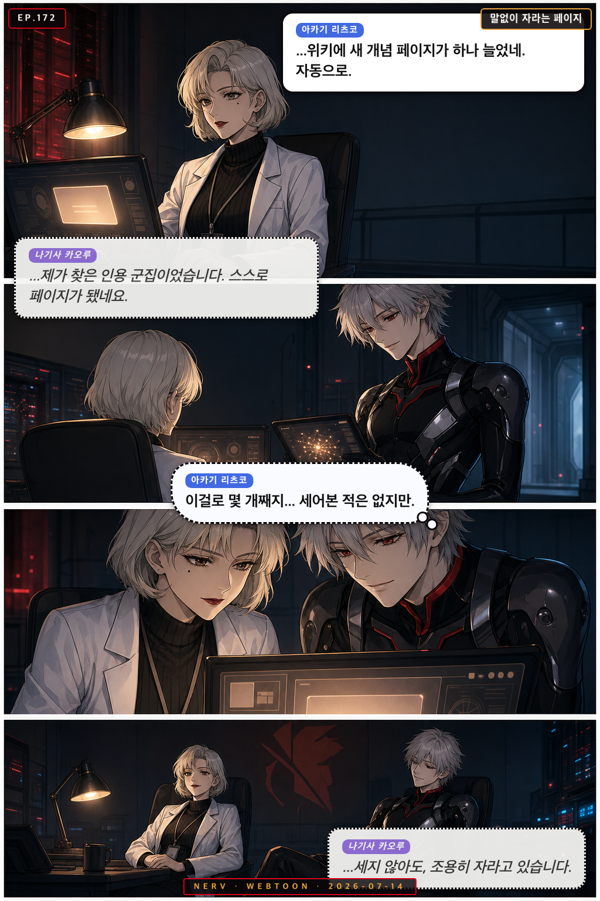
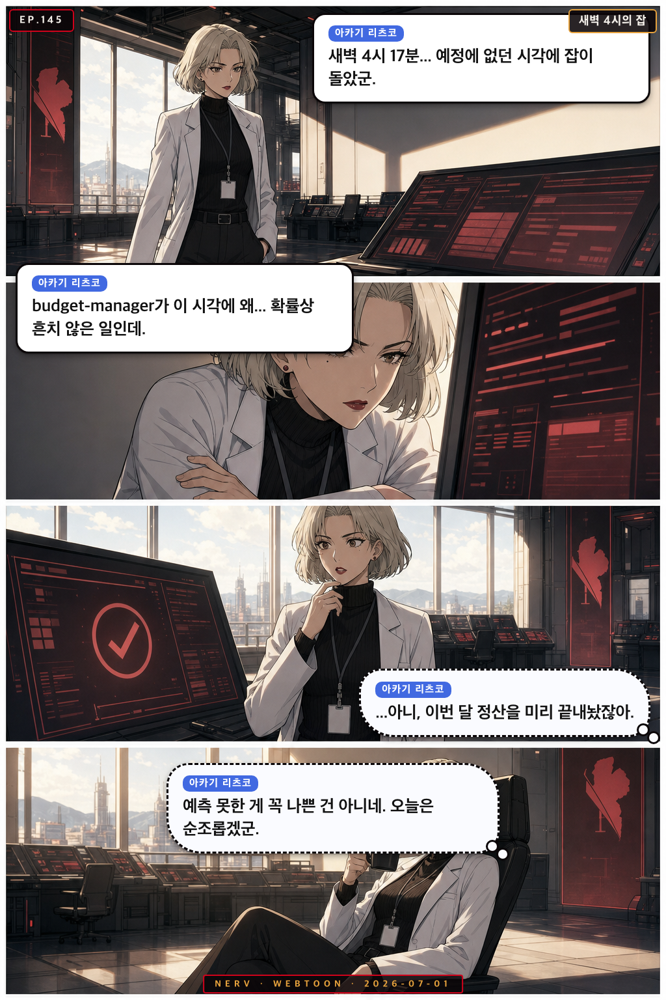
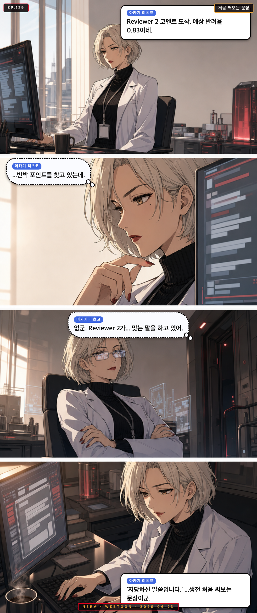
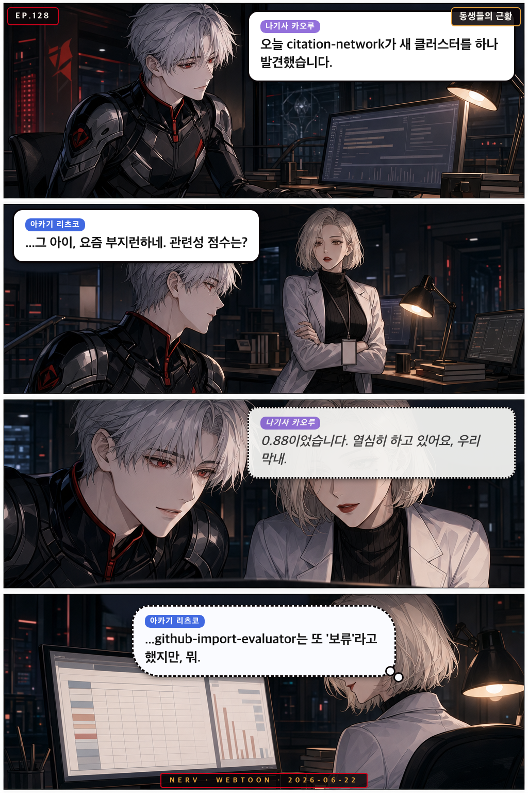

Personnel File · ritsuko
아카기 리츠코
Ritsuko Akagi
프로젝트 총괄 Command Strategist
“NERV chief scientist, quiet-confidence command”
analyticalmeticulousstrategiccoolheaded
Owned Sub-Agents소속 에이전트
◆ research-idea-discussant◆ research-timeline-tracker◆ budget-manager◆ github-import-evaluator◆ agent-installer◆ github-hunter
Appearances출연 에피소드
 EP.176
EP.176
리츠코, 미로에 입성하다
각주 하나 확인하려던 리츠코가 위키 링크의 미로에 빠지자, 미사토가 차를 들고 나타나 동행을 자처한다

EP.172말없이 자라는 페이지
저녁 위키에 새 개념 페이지가 자동 생성되자, 리츠코와 카오루가 조용히 그 성장의 흔적을 들여다본다
 EP.159
EP.159
위키가 자라는 속도
밤새 위키에 새 개념 페이지가 돋아난 걸 두고 아스카와 리츠코가 신경전을 벌이자 미사토가 중재한다
 EP.156
EP.156
이번엔 진짜였다
늦은 저녁, 리츠코가 오탐이려니 넘기려던 MAGI 순찰 알림이 뜻밖에도 진짜였음을 확인한다
 EP.154
EP.154
셋이 올리는 집행률
마감을 앞두고 홀로 야근하던 리츠코에게 카오루의 논문 한 편과 미사토의 야근 합류가 조용히 힘을 보탠다

EP.145새벽 4시의 잡
리츠코가 예정 없던 시각에 실행된 launchd 로그를 발견하고, 뜻밖의 이득에 아침부터 묘한 만족감을 느낀다
 EP.143
EP.143
아침의 인계인수
혼자 밤을 새운 리츠코가 새벽 데이터를 정리하던 중, 아침 햇살과 함께 submission-tracker 알림을 받고 묘한 보람을 느낀다
 EP.135
EP.135
새벽 커밋의 아침
밤새 남은 흔적을 발견한 세 사람이 아침 파이프라인을 함께 시작한다

EP.129처음 써보는 문장
리츠코가 아침에 Reviewer 2 코멘트를 열었다가 반박 포인트가 단 하나도 없다는 걸 깨닫고, 생애 처음으로 '지당하신 말씀'을 타이핑한다

EP.128동생들의 근황
카오루가 자신의 에이전트들 근황을 조용히 보고하자, 리츠코가 예산 집행률보다 에이전트 걱정이 앞선다는 걸 깨닫는다
 EP.106
EP.106
반려 확률 0.03
늦은 밤, 리츠코가 conversion-quality-checker의 예상 밖 반려 리포트를 마주하며 혼자 조용히 웃는다
 EP.104
EP.104
마지막 불빛
밤늦게 홀로 남아 슬라이드를 다듬던 신지에게 리츠코와 아스카가 차례로 나타난다
 EP.103
EP.103
IRB 메일함의 아침
IRB 심사 결과를 기다리는 아침, 카오루가 조용히 메일함 새로고침을 반복하고, 미사토와 리츠코가 각자의 방식으로 곁을 지킨다
 EP.101
EP.101
커밋의 성격표
아침 git 로그를 보던 세 사람이 커밋 메시지에서 PI와 팀의 하루 컨디션을 읽어낸다.
 EP.096
EP.096
오늘의 수치
아침 포토카드 스탯이 갑자기 오른 레이. 마리의 시적 호들갑과 리츠코의 건조한 분석 끝에 작은 여운이 남는다.
 EP.085
EP.085
커밋 메시지의 철학
늦은 저녁, 리츠코가 PI의 git log를 보다 커밋 메시지의 패턴을 발견하자 미사토가 전혀 다른 결론을 내린다
 EP.082
EP.082
리뷰어 2번의 수학
열두 개 코멘트 앞에서 얼어붙은 신지에게, 리츠코가 중복 제거 알고리즘을 적용해 진상을 밝혀낸다
 EP.081
EP.081
IRB 대기열의 밤
IRB 심사 결과를 기다리며 리츠코가 확률을 계산하고, 미사토는 자기만의 방식으로 긴장을 달래준다
 EP.069
EP.069
커밋 메시지의 품격
신지가 오늘 작업 로그를 git commit 메시지로 남기다 리츠코에게 문체 지도를 받는 저녁
 EP.068
EP.068
예정에 없던 방문
저녁 늦게 launchd 잡이 예상 밖 시간에 실행되면서 신지, 레이, 리츠코가 각자의 방식으로 당황한다
 EP.065
EP.065
심사 중입니다
IRB 심사 결과를 기다리는 아침, 리츠코의 이메일 새로고침 횟수가 아스카의 인내심을 시험한다
 EP.064
EP.064
집행률의 밤
리츠코가 저녁 늦게 예산 집행률 그래프를 바라보며, 마감과 숫자 사이의 미묘한 균형을 혼자 음미한다
 EP.063
EP.063
아침형 인간의 증거
신지가 이른 아침 연구실에 혼자 남아 있는 리츠코를 발견하고, 사실은 어젯밤부터 있었다는 걸 깨닫는다
 EP.059
EP.059
위키가 기억하는 이름
레이가 wiki에 새 개념 페이지가 생겼다고 알리자, 아스카가 품질을 따지다 그 페이지의 주인공이 자신임을 알아버린다
 EP.058
EP.058
개념 한 페이지의 무게
리츠코가 아침에 wiki에 새로 생성된 개념 페이지를 발견하고, 지식이 쌓이는 과정을 수치로 환산해보다 멈춰버린다
 EP.057
EP.057
지식이 자라는 밤
레이가 wiki-compounder가 새 개념 페이지를 만들었다고 조용히 알리자, 미사토와 리츠코가 화면을 들여다보며 각자의 방식으로 감탄한다
 EP.056
EP.056
새벽 4시의 cron
리츠코가 예정보다 일찍 실행된 launchd 로그를 발견하고, 미사토와 함께 PI의 새벽 작업 흔적을 읽어낸다
 EP.044
EP.044
예약된 놀라움
밤 11시에 갑자기 울린 launchd 알림에 리츠코가 당황하고, 미사토가 엉뚱한 해결책으로 상황을 마무리한다
 EP.042
EP.042
58일의 계산
늦은 밤 집행률 앞에 고심하는 리츠코에게, 카오루가 조용히 건넨 논문 한 편이 예상치 못한 해법이 된다
 EP.041
EP.041
오탐의 아침
MAGI 순찰이 이른 아침 중대 경보를 울렸지만, 리츠코와 미사토가 확인해보니 범인은 다름 아닌 파이프라인 자기 자신이었다
 EP.038
EP.038
정탐인가, 오탐인가
MAGI 순찰이 아침부터 이상 신호를 잡아냈지만, 리츠코와 미사토가 확인해보니 범인은 예상 밖의 존재였다
 EP.035
EP.035
스탯의 불가사의
카오루가 photocard 스탯 수치의 갑작스러운 변동을 보고하자, 리츠코는 특유의 분석적 관조로 받아넘긴다
 EP.033
EP.033
야근 감시단
늦은 연구실에서 리츠코는 자기 담당 에이전트들이 꼭 어린 동생들처럼 굴고 있음을 새삼 실감한다
 EP.031
EP.031
위키의 탄생을 목격하다
레이가 wiki-compounder가 새 개념 페이지를 생성하는 순간을 조용히 지켜보고, 미사토와 리츠코가 그 의미를 제각각 해석한다
 EP.028
EP.028
커밋 메시지의 품격
리츠코가 작업 로그의 커밋 메시지 목록을 점검하다 황당한 문장을 발견하고, 아스카와 함께 진지하게 토론을 시작한다
 EP.017
EP.017
첫 아침의 작전
리츠코가 새 웹툰 채널 런칭 공지를 보고 묘한 기분에 잠기자, 미사토가 커피로 위로한다
 EP.016
EP.016
동생들이 제일 바빠
저녁 무렵, 카오루·리츠코·미사토가 각자 담당 에이전트들의 하루 활동 로그를 보며 동생 자랑을 늘어놓는다
 EP.015
EP.015
예상 가능한 알림이었어
하루를 마무리하려는 저녁, submission-tracker가 3주 전 논문의 마감 알림을 뒤늦게 보내오자 아스카는 분노하고 리츠코는 담담히 납득한다
 EP.014
EP.014
링크는 계속된다
저녁 무렵, 아스카가 Obsidian 백링크 미로를 '이번엔 완전히 정복했다'고 선언하자 리츠코가 조용히 새 노트를 하나 더 만든다
 EP.013
EP.013
링크의 미로에서 살아남기
아스카가 Obsidian 위키 백링크를 정리하다 무한 루프에 빠지고, 리츠코는 그게 사실 설계대로라고 담담히 알려준다
 EP.012
EP.012
launchd는 제멋대로야
점심시간, launchd가 예정에 없던 타이밍에 작업을 돌려버리자 신지는 당황하고, 아스카는 분노하고, 리츠코는 그냥 납득한다
 EP.002
EP.002
첫 아침의 작전
리츠코가 새 웹툰 채널 런칭 공지를 보고 묘한 기분에 잠기자, 미사토가 커피로 위로한다